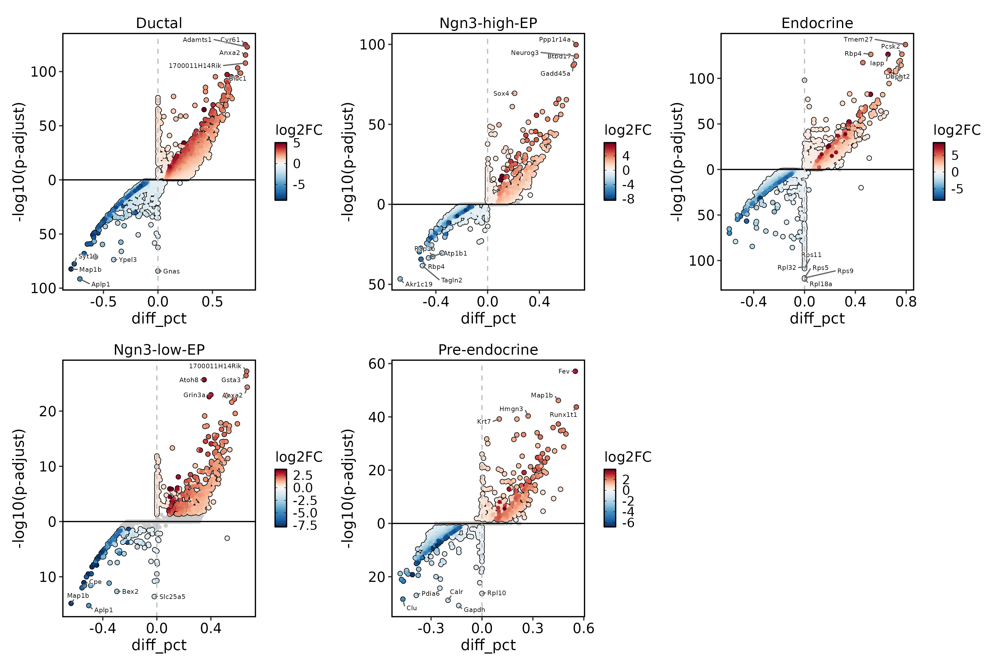
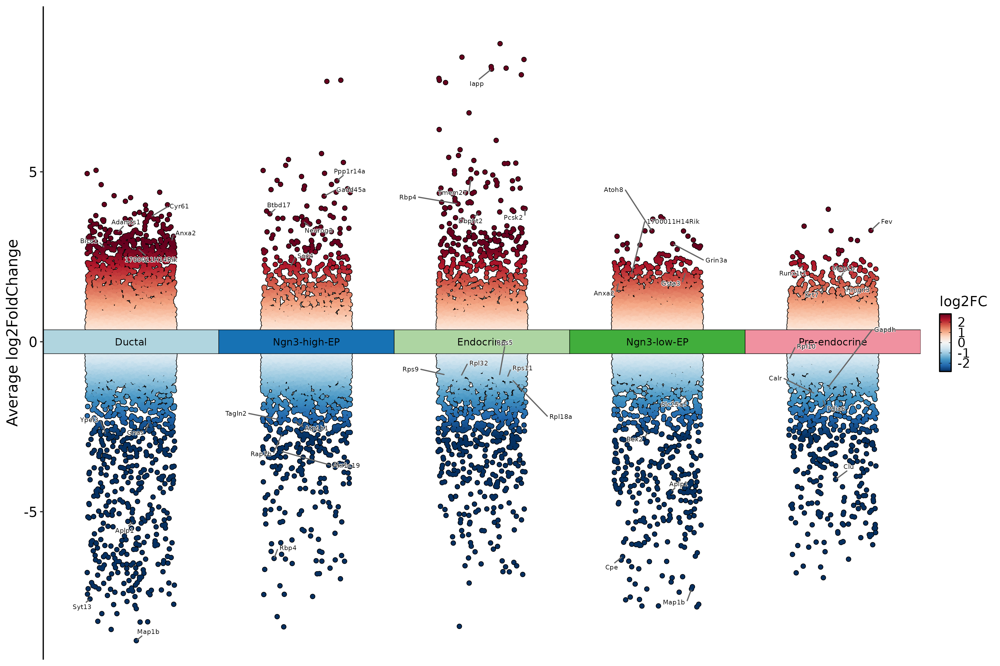
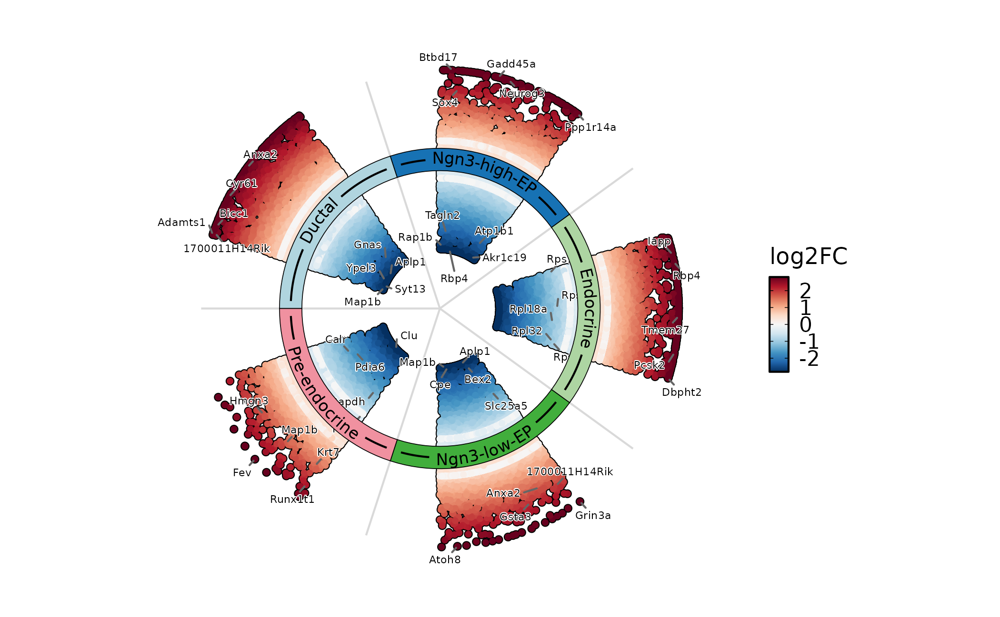
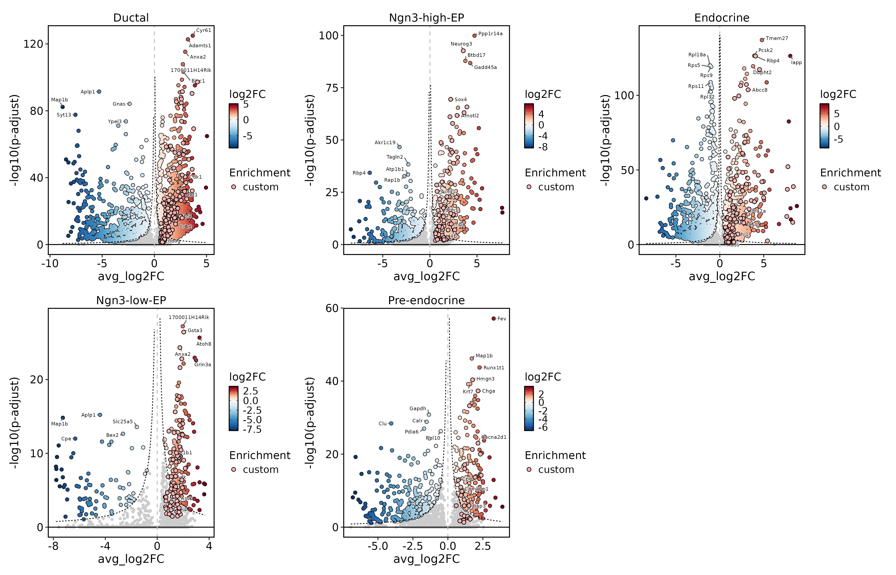
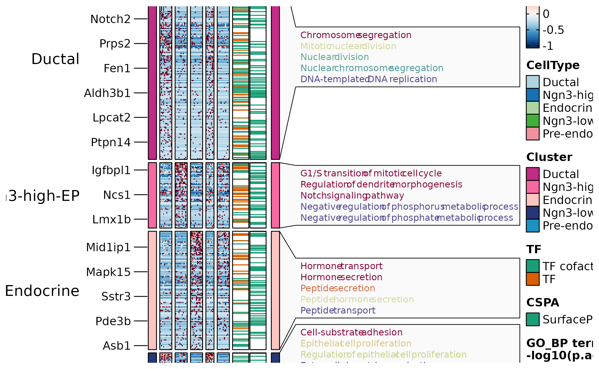
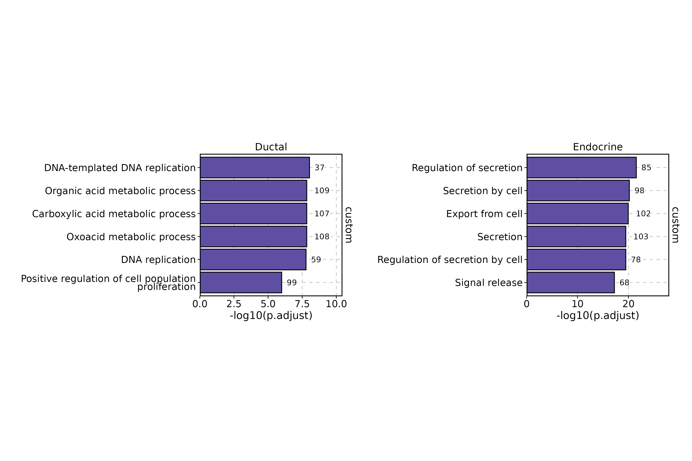
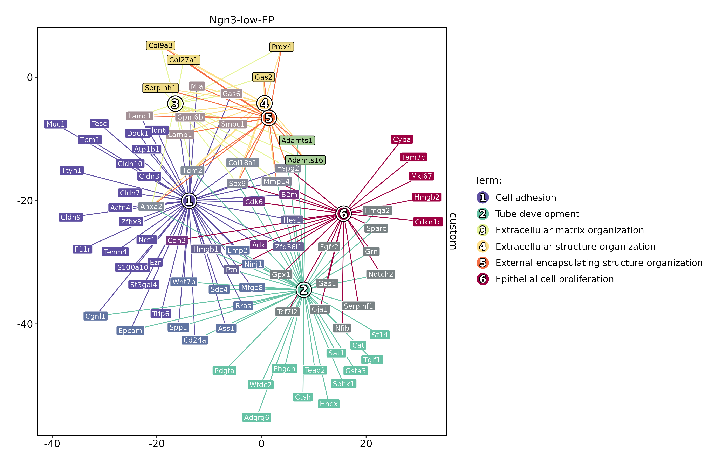
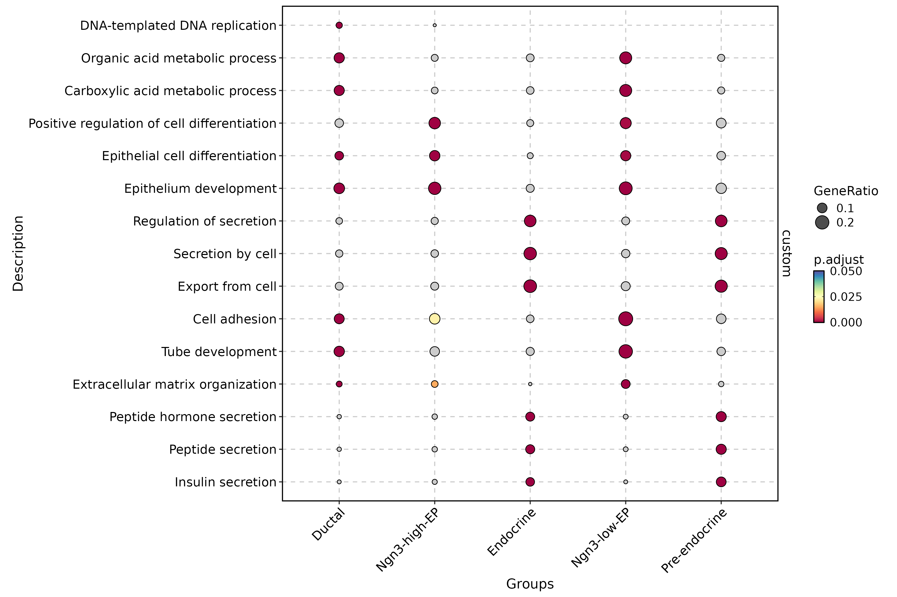
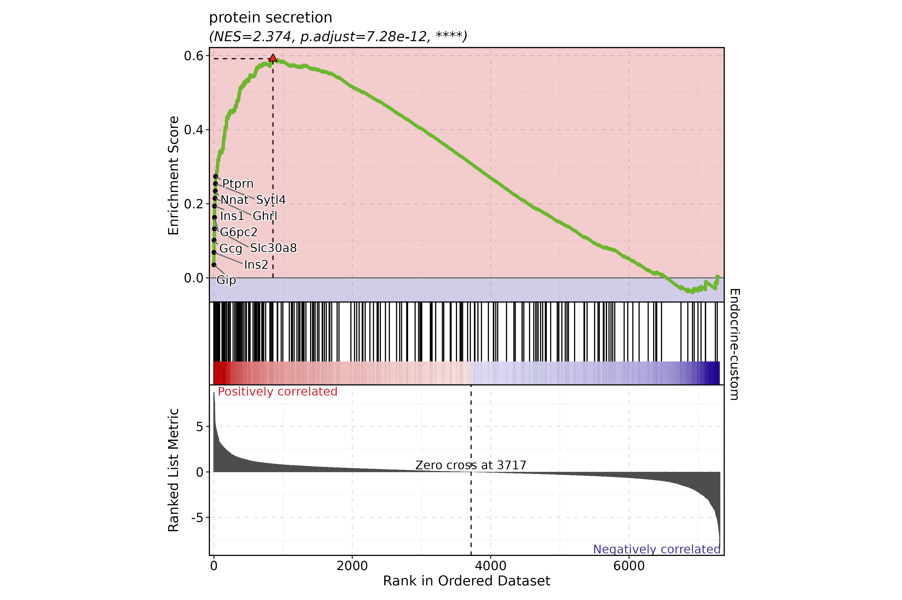
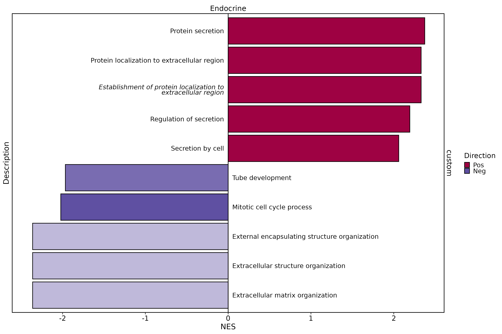

Differential expression and enrichment workflow
Source:vignettes/differential-enrichment-workflow.Rmd
differential-enrichment-workflow.RmdWhat you will do
- Question: which genes distinguish cell states, and which pathways summarize those differences?
-
Input: All 1,000 cells in the bundled mouse
pancreas object, with
CellTypelabels. Cells are observational units for this marker example, not biological replicates. - Output: A complete marker table, over-representation and ranked enrichment results, diagnostic plots and reusable tables.
- How to run: start a fresh R session and run the chunks in order. Printed tables and figures below are generated from that run; code-only alternatives are identified explicitly.
This article shows how to organize differential expression, marker
visualization, and pathway enrichment in scop. The main
distinction is between testing genes, summarizing gene sets, and
interpreting enriched biological terms.
Use this workflow after cell identities and major covariates are stable. Differential expression is gene-level evidence. Enrichment is a summary of a gene list or ranked statistic against a named database. Keep those two evidence layers separate in the text of a report.
Before the first analysis chunk, install the extra packages in the
same R library as SCOP. Use BiocManager for AnnotationDbi,
org.Mm.eg.db, GO.db and
clusterProfiler, and CRAN for shadowtext (used
by the network plot). These setup commands are run once, outside the
analysis render:
BiocManager::install(c("AnnotationDbi", "org.Mm.eg.db", "GO.db", "clusterProfiler"))
install.packages("shadowtext")Prepare the Object
library(scop)
set.seed(11)
data(pancreas_sub)
input_cells <- colnames(pancreas_sub)
pancreas_sub <- RunStandardWorkflow(pancreas_sub, assay = "RNA",
seed = 11, cores = 1, verbose = FALSE)
stopifnot(identical(colnames(pancreas_sub), input_cells))
data.frame(cells = ncol(pancreas_sub), genes = nrow(pancreas_sub))
#> cells genes
#> 1 1000 15998
table(pancreas_sub$CellType)
#>
#> Ductal Endocrine Ngn3-high-EP Ngn3-low-EP Pre-endocrine
#> 253 355 169 67 156Run Differential Expression
RunDEtest() writes differential-expression tables under
srt@tools. The default single-cell marker workflow is
appropriate for exploratory marker finding. Use sample-aware or
pseudobulk methods when biological replicates are part of the
question.
pancreas_sub <- RunDEtest(
pancreas_sub,
group.by = "CellType",
fc.threshold = 1,
only.pos = FALSE,
assay = "RNA", layer = "data", test.use = "wilcox",
max.cells.per.ident = Inf, min.pct = 0.1,
p.adjust.method = "bonferroni", cores = 1, seed = 11
)
de <- pancreas_sub@tools$DEtest_CellType$AllMarkers_wilcox
stopifnot(nrow(de) > 0, all(c("gene", "group1", "avg_log2FC", "p_val_adj") %in% names(de)))
data.frame(rows = nrow(de), unique_genes = length(unique(de$gene)),
contrasts = length(unique(de$group1)))
#> rows unique_genes contrasts
#> 1 36764 8465 5
head(de)
#> p_val avg_log2FC pct.1 pct.2 p_val_adj gene group1
#> 1 7.287773e-130 3.679046 0.897 0.096 1.165898e-125 Cyr61 Ductal
#> 2 1.168267e-127 3.217619 0.937 0.118 1.868994e-123 Adamts1 Ductal
#> 3 2.900413e-120 2.956891 0.976 0.173 4.640081e-116 Anxa2 Ductal
#> 4 8.561291e-113 2.733121 0.949 0.147 1.369635e-108 1700011H14Rik Ductal
#> 5 2.559824e-108 2.764483 0.960 0.229 4.095207e-104 Bicc1 Ductal
#> 6 1.495170e-103 2.646007 0.905 0.147 2.391972e-99 Gsta3 Ductal
#> group2 test_group_number
#> 1 others 5
#> 2 others 5
#> 3 others 5
#> 4 others 5
#> 5 others 5
#> 6 others 5
#> test_group
#> 1 Ductal;Ngn3-high-EP;Endocrine;Ngn3-low-EP;Pre-endocrine
#> 2 Ductal;Ngn3-high-EP;Endocrine;Ngn3-low-EP;Pre-endocrine
#> 3 Ductal;Ngn3-high-EP;Endocrine;Ngn3-low-EP;Pre-endocrine
#> 4 Ductal;Ngn3-high-EP;Endocrine;Ngn3-low-EP;Pre-endocrine
#> 5 Ductal;Ngn3-high-EP;Endocrine;Ngn3-low-EP;Pre-endocrine
#> 6 Ductal;Ngn3-high-EP;Endocrine;Ngn3-low-EP;Pre-endocrinefc.threshold = 1 is a fold-change ratio of one (log2
cutoff zero), not a log2-fold-change cutoff of one. Both directions are
retained, with no cell subsampling. The detection filter is 10% in at
least one group and adjusted p-values use Bonferroni here. An adjusted
p-value displayed as zero reflects numerical underflow, not
certainty.
Keep the contrast, grouping column, test method, and threshold in the
report. Those choices define the meaning of each marker table. For
FindAllMarkers-style results, group1 names the
group being compared against the remaining cells unless a specific
contrast is stated.
Plot Differential Results
Use volcano, Manhattan, and ring views for different levels of detail. Volcano plots are useful for one group or contrast; Manhattan and ring plots are useful when scanning many groups.
In the first volcano view, the horizontal coordinate is the
difference in detected-cell fractions (pct.1 - pct.2), not
log-fold change. The vertical coordinate is signed significance:
downregulated genes are drawn below zero; its magnitude is
-log10(p_val_adj). Colour shows log2-fold change. The
enrichment-annotated volcano below instead uses the conventional
log2-fold change horizontal coordinate and unsigned significance.
DEtestPlot(
pancreas_sub,
group.by = "CellType",
plot_type = "volcano",
label.size = 2
)
DEtestPlot(
pancreas_sub,
group.by = "CellType",
plot_type = "manhattan",
label.size = 2
)
DEtestPlot(
pancreas_sub,
group.by = "CellType",
plot_type = "ring",
label.size = 2
)
Prepare a tested-gene GO background
Install the mouse annotation resources in advance
(org.Mm.eg.db, GO.db and
AnnotationDbi), clusterProfiler for GSEA and
shadowtext for network labels. The native ORA backend does
not need clusterProfiler. This chunk reads real, locally installed GO
Biological Process annotations and records their versions. The common
background contains only genes returned by every DE comparison, before
significance filtering. This conservative shared universe avoids
treating genes excluded from the tests as eligible negative results. No
database downloads or invented pathway memberships occur during this
step.
tested_by_group <- split(de$gene, de$group1)
measured_genes <- Reduce(intersect, tested_by_group)
stopifnot(length(measured_genes) > 0)
valid_symbols <- intersect(measured_genes,
AnnotationDbi::keys(org.Mm.eg.db::org.Mm.eg.db, keytype = "SYMBOL"))
go_map <- AnnotationDbi::select(org.Mm.eg.db::org.Mm.eg.db,
keys = valid_symbols, keytype = "SYMBOL",
columns = c("GOALL", "ONTOLOGYALL"))
go_term2gene <- unique(go_map[!is.na(go_map$GOALL) & go_map$ONTOLOGYALL == "BP",
c("GOALL", "SYMBOL")])
colnames(go_term2gene) <- c("Term", "symbol")
go_term2name <- AnnotationDbi::select(GO.db::GO.db,
keys = unique(go_term2gene$Term),
keytype = "GOID", columns = "TERM")
go_term2name <- unique(go_term2name[stats::complete.cases(go_term2name), ])
colnames(go_term2name) <- c("Term", "Name")
go_version <- paste("org.Mm.eg.db", utils::packageVersion("org.Mm.eg.db"),
"; GO.db", utils::packageVersion("GO.db"))
stopifnot(nrow(go_term2gene) > 0)
data.frame(database = "GO_BP", version = go_version,
genes_tested_in_every_group = length(measured_genes),
GO_annotated_background = length(unique(go_term2gene$symbol)),
terms = length(unique(go_term2gene$Term)))
#> database version genes_tested_in_every_group
#> 1 GO_BP org.Mm.eg.db 3.23.0 ; GO.db 3.23.1 6770
#> GO_annotated_background terms
#> 1 6109 11849The ORA universe is the union of genes in this restricted GO mapping,
not the whole genome. Genes outside the common tested set or without GO
annotation cannot contribute. Because we supply TERM2GENE,
SCOP stores the database key as custom; its biological
source remains the versioned GO_BP mapping above. Keep that source
information with the exported result.
When enrichment results are available, volcano plots can annotate
enriched terms to connect marker genes with pathway-level
interpretation. The enrichment overlay circles genes that belong to
selected enriched terms. The legend title is the analysis layer
(Enrichment), and the legend item is the database, here
custom for the explicitly supplied GO_BP mapping.
pancreas_sub <- RunEnrichment(
pancreas_sub,
group.by = "CellType",
species = "Mus_musculus",
TERM2GENE = go_term2gene, TERM2NAME = go_term2name,
DE_threshold = "avg_log2FC > log2(1.5) & p_val_adj < 0.05"
)
DEtestPlot(
pancreas_sub,
group.by = "CellType",
plot_type = "volcano",
threshold_method = "hyperbolic",
hyperbola_c = 6,
annotate_enrichment = TRUE,
enrich_from = "Enrichment",
enrich_db = "custom",
enrich_top_terms = 3,
enrich_nlabel = 5,
label.size = 2
)
Only five enrichment-associated gene labels per cell group are shown to keep the panels readable; the full marker and enrichment tables are exported. The dashed hyperbolic guide is a display selection rule, not an additional statistical test or the cutoff used to create the ORA input.
Summarize Markers in Heatmaps
Feature heatmaps are useful after markers have been filtered. Keep the filter explicit and avoid showing very large marker sets without grouping or splitting. The complete DE table is retained. Only the ten strongest positive markers per group are selected for this readable figure; this is a declared display choice, not a change to the test or its cell population. All cells remain in the plot.
DEGs <- pancreas_sub@tools$DEtest_CellType$AllMarkers_wilcox
DEGs <- DEGs[with(DEGs, avg_log2FC > 1 & p_val_adj < 0.05), ]
display_markers <- do.call(rbind, lapply(split(DEGs, DEGs$group1), function(x) {
head(x[order(x$avg_log2FC, decreasing = TRUE), ], 10)
}))
display_markers <- display_markers[!duplicated(display_markers$gene), ]
stopifnot(nrow(display_markers) > 0)
ht <- FeatureHeatmap(
pancreas_sub,
group.by = "CellType",
features = display_markers$gene,
feature_split = display_markers$group1,
max_cells = Inf,
exp_legend_title = "Z-score",
anno_terms = FALSE
)
print(ht$plot)
Run Over-Representation Analysis
RunEnrichment() tests whether filtered marker sets are
enriched for terms from the selected database. GO_BP is
Gene Ontology Biological Process. The specific enriched terms are the
rows shown by EnrichmentPlot().
ora <- pancreas_sub@tools$Enrichment_CellType_wilcox$enrichment
head(ora)
#> ID Description GeneRatio
#> 1 GO:0006261 DNA-templated DNA replication 37/973
#> 2 GO:0006082 organic acid metabolic process 109/973
#> 3 GO:0019752 carboxylic acid metabolic process 107/973
#> 4 GO:0043436 oxoacid metabolic process 108/973
#> 5 GO:0006260 DNA replication 59/973
#> 6 GO:0008284 positive regulation of cell population proliferation 99/973
#> BgRatio RichFactor FoldEnrichment zScore pvalue p.adjust
#> 1 72/6109 0.5138889 3.226462 8.271120 2.435609e-12 9.187117e-09
#> 2 371/6109 0.2938005 1.844633 7.305803 1.142151e-11 1.459959e-08
#> 3 363/6109 0.2947658 1.850693 7.273391 1.442932e-11 1.459959e-08
#> 4 368/6109 0.2934783 1.842609 7.256876 1.548207e-11 1.459959e-08
#> 5 157/6109 0.3757962 2.359444 7.510573 2.188759e-11 1.651200e-08
#> 6 352/6109 0.2812500 1.765834 6.441710 1.595156e-09 1.002821e-06
#> qvalue
#> 1 9.187117e-09
#> 2 1.459959e-08
#> 3 1.459959e-08
#> 4 1.459959e-08
#> 5 1.651200e-08
#> 6 1.002821e-06
#> geneID
#> 1 Mcm3/Lig1/Mcm6/Gmnn/Tk1/Mcm5/Cdk1/Prim1/Cdt1/Mcm4/Rfc4/Pcna/Tipin/Mcm7/Mcm2/Rrm1/Pold2/Rfc5/Rad50/Fbxo5/Timeless/Topbp1/Pole3/Dbf4/Cdk2/Rfc2/Rfc3/Pole4/Rbbp8/Parp1/Rfc1/Fgfr1/Mgme1/Pold3/Pola1/Endog/Gins4
#> 2 Hpgd/Nudt19/Psat1/Ldha/Sox9/Dbi/Phgdh/Galk1/Fmo2/Sphk1/Mif/Eno1/Gapdh/Acot1/Rbp1/Ldhb/Fabp5/Npl/Hsd17b10/Prdx4/Fads3/Tpi1/Gpx1/Vnn1/Shmt1/Akr1cl/Scd2/Ier3/Idh2/Atp1a2/Gstm2/Nr5a2/Gstp1/Spr/Yap1/Gpt2/Decr1/Aldoc/Ran/Cyb5a/Acaa2/Dhfr/Ces1d/Acsl5/Ptgr1/Acadm/Cdo1/Degs1/Suclg2/Ggt1/Mtap/Acadl/Errfi1/Mthfd1/Mgll/Fmo1/Slc4a4/Nit2/Cbs/Gsto1/Prmt3/Acot7/Gstm1/Sdsl/Aldh7a1/Bcat2/Mpc2/Acat2/Atic/Gcsh/Apoc1/Pecr/Mpst/Pter/Idh1/Fgfr1/Tnfrsf1a/Htatip2/Gnpda1/Acsl3/Oat/Echs1/Gpi1/Stard4/Elovl6/Etfb/Pgk1/Gamt/Cryl1/Fgfr4/Adipor2/Pon2/Ptgds/Ech1/Pdk1/Gstm7/Pank2/Ppat/Khk/Cyp2j6/Cs/Mecr/Cln3/Odc1/Ptges2/Aco1/Src/Elovl7/Adi1
#> 3 Hpgd/Nudt19/Psat1/Ldha/Sox9/Dbi/Phgdh/Galk1/Fmo2/Sphk1/Mif/Eno1/Gapdh/Acot1/Rbp1/Ldhb/Fabp5/Npl/Hsd17b10/Prdx4/Fads3/Tpi1/Gpx1/Vnn1/Shmt1/Akr1cl/Scd2/Ier3/Idh2/Atp1a2/Gstm2/Nr5a2/Gstp1/Spr/Yap1/Gpt2/Decr1/Aldoc/Ran/Cyb5a/Acaa2/Dhfr/Ces1d/Acsl5/Ptgr1/Acadm/Cdo1/Degs1/Suclg2/Ggt1/Mtap/Acadl/Errfi1/Mthfd1/Mgll/Fmo1/Slc4a4/Nit2/Cbs/Gsto1/Prmt3/Acot7/Gstm1/Sdsl/Aldh7a1/Bcat2/Mpc2/Acat2/Atic/Gcsh/Apoc1/Pecr/Mpst/Idh1/Tnfrsf1a/Htatip2/Gnpda1/Acsl3/Oat/Echs1/Gpi1/Stard4/Elovl6/Etfb/Pgk1/Gamt/Cryl1/Fgfr4/Adipor2/Pon2/Ptgds/Ech1/Pdk1/Gstm7/Pank2/Ppat/Khk/Cyp2j6/Cs/Mecr/Cln3/Odc1/Ptges2/Aco1/Src/Elovl7/Adi1
#> 4 Hpgd/Nudt19/Psat1/Ldha/Sox9/Dbi/Phgdh/Galk1/Fmo2/Sphk1/Mif/Eno1/Gapdh/Acot1/Rbp1/Ldhb/Fabp5/Npl/Hsd17b10/Prdx4/Fads3/Tpi1/Gpx1/Vnn1/Shmt1/Akr1cl/Scd2/Ier3/Idh2/Atp1a2/Gstm2/Nr5a2/Gstp1/Spr/Yap1/Gpt2/Decr1/Aldoc/Ran/Cyb5a/Acaa2/Dhfr/Ces1d/Acsl5/Ptgr1/Acadm/Cdo1/Degs1/Suclg2/Ggt1/Mtap/Acadl/Errfi1/Mthfd1/Mgll/Fmo1/Slc4a4/Nit2/Cbs/Gsto1/Prmt3/Acot7/Gstm1/Sdsl/Aldh7a1/Bcat2/Mpc2/Acat2/Atic/Gcsh/Apoc1/Pecr/Mpst/Idh1/Fgfr1/Tnfrsf1a/Htatip2/Gnpda1/Acsl3/Oat/Echs1/Gpi1/Stard4/Elovl6/Etfb/Pgk1/Gamt/Cryl1/Fgfr4/Adipor2/Pon2/Ptgds/Ech1/Pdk1/Gstm7/Pank2/Ppat/Khk/Cyp2j6/Cs/Mecr/Cln3/Odc1/Ptges2/Aco1/Src/Elovl7/Adi1
#> 5 Nfib/Gins2/Mcm3/Lig1/Mcm6/Gmnn/Npm1/Tk1/Mcm5/Cdk1/Shmt1/Prim1/Tyms/Cdt1/Chaf1b/Chaf1a/Mcm4/Rfc4/Pcna/Rbbp7/Ccna2/Jun/Tipin/Mcm7/Mcm2/Rrm1/Pold2/Rpa2/Rfc5/Rad50/Fbxo5/Timeless/Topbp1/Pole3/Nfia/Dbf4/Cdk2/Rfc2/Rfc3/Pole4/Dnajc2/Fen1/Rbbp8/Rbms1/Ssrp1/Parp1/Nasp/Rfc1/Fgfr1/Grwd1/Rpa3/Mgme1/Pold3/Uchl5/Pola1/Cinp/Endog/Msh2/Gins4
#> 6 Adamts1/Anxa2/Hpgd/Ccnd1/Sox9/Ptn/Vim/Hes1/Clu/Col18a1/Nrarp/Cyba/Sphk1/Mif/Hmga2/Wnt7b/Cdk6/Rps4x/Npm1/S100b/Gja1/Tgm2/Rpl23/Id2/Fgfr2/Rassf10/Cdk1/Adk/Gas6/Mycn/Gas1/Tgif1/Emp2/Ccnd2/Lifr/Cldn7/Hmgb2/Cxadr/Cdca7l/Nr5a2/Tspo/Yap1/Rrm2/Cdh3/Ccna2/Skp2/Nr4a1/Dkc1/Jun/Tcf7l2/Bex1/Epcam/Tipin/Smarcd3/Flna/Notch2/Ezh2/Hmgb1/Rara/Pdgfa/Crip2/Ccnb1/Fbxo5/Cdc20/Anp32b/Hspg2/Igfbp5/Cdk2/Shank2/Smo/Ccnd3/Igf2/Clcf1/Dnmt1/Fn1/Atf3/Tcf3/Igf1r/Erbb3/Meis1/Slc39a10/Fgfr1/Gata6/Fgfr3/Tfrc/Grn/Notch1/Fgfr4/Prkra/Fndc3b/Rela/Dab2ip/Mnat1/Pycard/Hilpda/Odc1/Saal1/Src/Nqo2
#> Count Groups Database Version
#> 1 37 Ductal custom custom
#> 2 109 Ductal custom custom
#> 3 107 Ductal custom custom
#> 4 108 Ductal custom custom
#> 5 59 Ductal custom custom
#> 6 99 Ductal custom custom
data.frame(group = unique(ora$Groups), significant_terms = vapply(
unique(ora$Groups), function(g) sum(ora$p.adjust[ora$Groups == g] < 0.05,
na.rm = TRUE), integer(1)))
#> group significant_terms
#> Ductal Ductal 363
#> Ngn3-high-EP Ngn3-high-EP 50
#> Endocrine Endocrine 184
#> Ngn3-low-EP Ngn3-low-EP 287
#> Pre-endocrine Pre-endocrine 122
# Reuse the measured result above; plotting does not rerun enrichment.
EnrichmentPlot(
pancreas_sub,
db = "custom",
group.by = "CellType",
group_use = c("Ductal", "Endocrine"),
plot_type = "bar"
)
Use different plot types for different questions: bar or lollipop plots for ranked terms, word clouds for broad themes, and networks or enrichmaps for term relationships. The exported table includes tested terms that did not pass adjusted p < 0.05; its row count is not a count of significant pathways. Related GO terms often share genes, so several similar terms are not independent biological findings.
EnrichmentPlot(
pancreas_sub,
db = "custom",
group.by = "CellType",
group_use = "Ngn3-low-EP",
plot_type = "network"
)
EnrichmentPlot(
pancreas_sub,
db = "custom",
group.by = "CellType",
plot_type = "comparison",
topTerm = 3
)
In the network, numbered circles refer to the GO terms in the legend; rectangles are genes and edges are annotation membership. This is not an inferred gene-regulatory network. Its axes are layout coordinates, not expression or pseudotime. In the comparison plot, dot size is GeneRatio and colour shows adjusted significance; use the exported table to distinguish nonsignificant terms from missing results.
Run GSEA
Use GSEA when ranked gene statistics are more appropriate than a hard marker cutoff. ORA depends on a marker cutoff, while GSEA uses a ranked gene list. Use GSEA when many genes shift modestly and a binary marker threshold would discard useful signal. This run ranks all finite tested log2-fold changes in both directions; it does not prefilter genes by significance. Positive NES supports enrichment toward the positive end of that group-versus-rest ranking, negative NES toward the other end. Statistical significance and effect direction must both be read from the real result table. GSEA performs substantial permutation work and can take longer than DE or plotting.
GSEA uses a separate GO mapping covering the union of the tested genes. Each group’s full ranking is retained. Reusing the ORA intersection would remove known GO memberships from genes that remain in a group’s ranking.
gsea_symbols <- intersect(unique(de$gene),
AnnotationDbi::keys(org.Mm.eg.db::org.Mm.eg.db, keytype = "SYMBOL"))
gsea_map <- AnnotationDbi::select(org.Mm.eg.db::org.Mm.eg.db,
keys = gsea_symbols, keytype = "SYMBOL",
columns = c("GOALL", "ONTOLOGYALL"))
gsea_term2gene <- unique(gsea_map[!is.na(gsea_map$GOALL) & gsea_map$ONTOLOGYALL == "BP",
c("GOALL", "SYMBOL")])
colnames(gsea_term2gene) <- c("Term", "symbol")
gsea_term2name <- AnnotationDbi::select(GO.db::GO.db,
keys = unique(gsea_term2gene$Term), keytype = "GOID", columns = "TERM")
gsea_term2name <- unique(gsea_term2name[stats::complete.cases(gsea_term2name), ])
colnames(gsea_term2name) <- c("Term", "Name")
stopifnot(all(go_term2gene$symbol %in% gsea_term2gene$symbol))
pancreas_sub <- RunGSEA(
pancreas_sub,
group.by = "CellType",
species = "Mus_musculus",
TERM2GENE = gsea_term2gene, TERM2NAME = gsea_term2name,
DE_threshold = "is.finite(avg_log2FC)",
nPermSimple = 10000,
eps = 0
)
gsea_endocrine <- subset(
pancreas_sub@tools$GSEA_CellType_wilcox$enrichment,
Groups == "Endocrine" & Database == "custom"
)
gsea_id <- gsea_endocrine$ID[which.min(gsea_endocrine$p.adjust)]
print(head(gsea_endocrine[order(gsea_endocrine$p.adjust),
c("ID", "Description", "NES", "p.adjust")], 5))
#> ID Description
#> 8228 GO:0009306 protein secretion
#> 8229 GO:0051046 regulation of secretion
#> 8230 GO:0035592 establishment of protein localization to extracellular region
#> 8231 GO:0071692 protein localization to extracellular region
#> 8232 GO:0032940 secretion by cell
#> NES p.adjust
#> 8228 2.374474 7.275006e-12
#> 8229 2.194113 7.275006e-12
#> 8230 2.330899 7.531970e-12
#> 8231 2.330899 7.531970e-12
#> 8232 2.060459 7.531970e-12
print(GSEAPlot(
pancreas_sub,
db = "custom",
group.by = "CellType",
group_use = "Endocrine",
id_use = gsea_id
))
print(GSEAPlot(
pancreas_sub,
db = "custom",
group.by = "CellType",
group_use = "Endocrine",
plot_type = "bar",
direction = "both",
topTerm = 10
))
#> Warning: `guide_colourbar()` cannot be used for alpha.
#> ℹ Use one of colour, color, or fill instead.
In the running-score plot, black ticks locate gene-set members in the ranked gene list; the green curve is the cumulative enrichment score. The lower panel is the log2-fold-change ranking statistic. The horizontal coordinate is a gene rank, not cell order or developmental time. Read the signed NES and adjusted p-value together with the term’s contributing genes.
Save, reload, and check the hand-off
The code below saves to a temporary directory. Choose a persistent output folder when saving your analysis. Save the object and plain-text metadata; a figure alone cannot reproduce the analysis. No cells are sampled for this export.
output_dir <- file.path(tempdir(), "differential-enrichment-workflow")
dir.create(output_dir, recursive = TRUE, showWarnings = FALSE)
result_file <- file.path(output_dir, "analysis.rds")
saveRDS(pancreas_sub, result_file)
utils::write.csv(de, file.path(output_dir, "all-markers.csv"), row.names = FALSE)
utils::write.csv(go_term2gene, file.path(output_dir, "GO-BP-measured-background.csv"), row.names = FALSE)
utils::write.csv(gsea_term2gene, file.path(output_dir, "GO-BP-GSEA-memberships.csv"), row.names = FALSE)
writeLines(paste("GO_BP", go_version), file.path(output_dir, "GO-source.txt"))
utils::write.csv(pancreas_sub@tools$Enrichment_CellType_wilcox$enrichment,
file.path(output_dir, "ORA.csv"), row.names = FALSE)
utils::write.csv(pancreas_sub@tools$GSEA_CellType_wilcox$enrichment,
file.path(output_dir, "GSEA.csv"), row.names = FALSE)
utils::write.csv(pancreas_sub@meta.data, file.path(output_dir, "cell-metadata.csv"))
reloaded <- readRDS(result_file)
stopifnot(identical(colnames(reloaded), colnames(pancreas_sub)),
identical(reloaded@meta.data, pancreas_sub@meta.data),
identical(SeuratObject::Reductions(reloaded),
SeuratObject::Reductions(pancreas_sub)),
identical(GetAssayData5(reloaded, assay = "RNA", layer = "counts"),
GetAssayData5(pancreas_sub, assay = "RNA", layer = "counts")))
stopifnot(identical(reloaded@tools$DEtest_CellType$AllMarkers_wilcox, de),
identical(reloaded@tools$Enrichment_CellType_wilcox$enrichment,
pancreas_sub@tools$Enrichment_CellType_wilcox$enrichment),
identical(reloaded@tools$GSEA_CellType_wilcox$enrichment,
pancreas_sub@tools$GSEA_CellType_wilcox$enrichment))
data.frame(file = basename(list.files(output_dir, full.names = TRUE)),
bytes = file.info(list.files(output_dir, full.names = TRUE))$size)
#> file bytes
#> 1 all-markers.csv 5268635
#> 2 analysis.rds 50901270
#> 3 cell-metadata.csv 146525
#> 4 GO-BP-GSEA-memberships.csv 12612015
#> 5 GO-BP-measured-background.csv 10159062
#> 6 GO-source.txt 41
#> 7 GSEA.csv 6702982
#> 8 ORA.csv 3986172Use your own data and recover common errors
- Replace the
data(...)input withreadRDS("your-object.rds"), or create a Seurat object from a gene-by-cell raw-count matrix. Check that cell IDs are unique and metadata row names equal the expression column names. - Set the assay and grouping columns explicitly. Species, gene identifiers and reference labels must match your experiment; do not copy pancreas labels to unrelated tissue.
- If a reduction or metadata column is missing, inspect
SeuratObject::Reductions(object)andcolnames(object@meta.data), then run its producer chunk. A plot does not create the result it needs. - If GO returns no terms, inspect gene identifiers, overlap, set-size filters and the actual adjusted p-values. Do not loosen thresholds merely to force a positive result. A valid empty result and an unavailable database are different.
- If a dependency is unavailable, install it in the analysis environment, restart R and rerun from the input chunk. A skipped or failed method is not evidence that it worked. Preserve warnings and the exact error in your report.
Analysis provenance
The receipt records the R seed. Python methods retain their documented backend seeds and parameters; setting the R seed alone does not control every backend. Package versions, BLAS libraries and backend changes can alter numerical results. Keep this receipt with the exported object.
source_revision <- Sys.getenv("GITHUB_SHA")
if (!nzchar(source_revision) && nzchar(Sys.which("git"))) {
source_revision <- tryCatch(system2("git", c("rev-parse", "HEAD"), stdout = TRUE,
stderr = FALSE)[1], error = function(e) NA_character_)
}
article_source <- knitr::current_input(dir = TRUE)
build_receipt <- data.frame(
article = "differential-enrichment-workflow",
built_utc = format(Sys.time(), tz = "UTC", usetz = TRUE),
scop = as.character(utils::packageVersion("scop")),
R = as.character(getRversion()),
source_revision = source_revision,
source_has_local_changes = if (nzchar(Sys.which("git")))
length(system2("git", c("status", "--porcelain"), stdout = TRUE, stderr = FALSE)) > 0 else NA,
article_md5 = unname(tools::md5sum(article_source)),
R_seed = 11,
cells_retained = ncol(pancreas_sub),
genes_in_active_assay = nrow(pancreas_sub),
stringsAsFactors = FALSE
)
build_receipt
#> article built_utc scop R
#> 1 differential-enrichment-workflow 2026-10-24 06:45:02 UTC 0.9.2 4.6.1
#> source_revision source_has_local_changes
#> 1 216ce834556ef9fb072699473975742d0bd0c103 FALSE
#> article_md5 R_seed cells_retained genes_in_active_assay
#> 1 89dac5c2b8583a6ebdd392f907b4f928 11 1000 15998
utils::write.csv(build_receipt, file.path(output_dir, "build-receipt.csv"),
row.names = FALSE)
writeLines(capture.output(sessionInfo()), file.path(output_dir, "session-info.txt"))Show the complete R session used for this page
sessionInfo()
#> R version 4.6.1 (2026-06-24)
#> Platform: x86_64-pc-linux-gnu
#> Running under: Ubuntu 24.04.5 LTS
#>
#> Matrix products: default
#> BLAS: /usr/lib/x86_64-linux-gnu/openblas-pthread/libblas.so.3
#> LAPACK: /usr/lib/x86_64-linux-gnu/openblas-pthread/libopenblasp-r0.3.26.so; LAPACK version 3.12.0
#>
#> locale:
#> [1] LC_CTYPE=C.UTF-8 LC_NUMERIC=C LC_TIME=C.UTF-8
#> [4] LC_COLLATE=C.UTF-8 LC_MONETARY=C.UTF-8 LC_MESSAGES=C.UTF-8
#> [7] LC_PAPER=C.UTF-8 LC_NAME=C LC_ADDRESS=C
#> [10] LC_TELEPHONE=C LC_MEASUREMENT=C.UTF-8 LC_IDENTIFICATION=C
#>
#> time zone: UTC
#> tzcode source: system (glibc)
#>
#> attached base packages:
#> [1] stats graphics grDevices utils datasets methods base
#>
#> other attached packages:
#> [1] scop_0.9.2
#>
#> loaded via a namespace (and not attached):
#> [1] fs_2.1.0 matrixStats_1.5.0 spatstat.sparse_3.2-0
#> [4] enrichplot_1.32.1 httr_1.4.9 RColorBrewer_1.1-3
#> [7] doParallel_1.0.17 tools_4.6.1 sctransform_0.4.3
#> [10] R6_2.6.1 lazyeval_0.2.3 uwot_0.2.5
#> [13] GetoptLong_1.1.1 withr_3.0.3 sp_2.2-4
#> [16] gridExtra_2.3.1 progressr_1.1.0 cli_3.6.6
#> [19] Biobase_2.72.0 textshaping_1.0.5 Cairo_1.7-0
#> [22] spatstat.explore_3.8-3 fastDummies_1.7.6 scatterpie_0.2.6
#> [25] labeling_0.4.3 sass_0.4.10 Seurat_5.6.0
#> [28] S7_0.2.2 spatstat.data_3.1-9 ggridges_0.5.7
#> [31] pbapply_1.7-5 pkgdown_2.2.1 systemfonts_1.3.2
#> [34] yulab.utils_0.2.5 gson_0.2.2 DOSE_4.6.0
#> [37] dichromat_2.0-1 parallelly_1.48.0 RSQLite_3.53.3
#> [40] generics_0.1.4 gridGraphics_0.5-1 shape_1.4.6.1
#> [43] ica_1.0-3 spatstat.random_3.5-2 dplyr_1.2.1
#> [46] GO.db_3.23.1 Matrix_1.7-6 S4Vectors_0.50.3
#> [49] abind_1.4-8 lifecycle_1.0.5 yaml_2.3.12
#> [52] qvalue_2.44.0 Rtsne_0.17 grid_4.6.1
#> [55] blob_1.3.0 thisplot_0.4.6 promises_1.5.0
#> [58] crayon_1.5.3 miniUI_0.1.2 ggtangle_0.1.4
#> [61] lattice_0.22-9 cowplot_1.2.0 KEGGREST_1.52.2
#> [64] magick_2.9.1 pillar_1.11.1 knitr_1.52
#> [67] ComplexHeatmap_2.28.0 fgsea_1.38.0 rjson_0.2.23
#> [70] future.apply_1.21.0 codetools_0.2-20 fastmatch_1.1-8
#> [73] glue_1.8.1 ggiraph_0.9.6 ggfun_0.2.2
#> [76] spatstat.univar_3.2-0 fontLiberation_0.1.0 data.table_1.18.6.1
#> [79] vctrs_0.7.3 png_0.1-9 treeio_1.36.1
#> [82] spam_2.11-4 org.Mm.eg.db_3.23.0 gtable_0.3.6
#> [85] cachem_1.1.0 xfun_0.62 mime_0.13
#> [88] Seqinfo_1.2.0 survival_3.8-6 aisdk_1.4.12
#> [91] iterators_1.0.14 thisutils_0.5.3 fitdistrplus_1.2-6
#> [94] ROCR_1.0-12 nlme_3.1-169 ggtree_4.2.0
#> [97] bit64_4.8.6 fontquiver_0.2.1 RcppAnnoy_0.0.23
#> [100] bslib_0.12.0 irlba_2.4.1 KernSmooth_2.23-26
#> [103] otel_0.2.0 colorspace_2.1-4 BiocGenerics_0.58.1
#> [106] DBI_1.3.0 tidyselect_1.2.1 processx_3.9.0
#> [109] proxyC_0.5.2 bit_4.6.0 compiler_4.6.1
#> [112] geomtextpath_0.2.0 httr2_1.3.0 desc_1.4.3
#> [115] fontBitstreamVera_0.1.1 plotly_4.12.1 shadowtext_0.1.6
#> [118] scales_1.4.0 lmtest_0.9-40 callr_3.8.0
#> [121] rappdirs_0.3.4 stringr_1.6.0 digest_0.6.39
#> [124] goftest_1.2-3 spatstat.utils_3.2-5 presto_1.1.0
#> [127] rmarkdown_2.32 XVector_0.52.0 htmltools_0.5.9
#> [130] pkgconfig_2.0.3 fastmap_1.2.0 rlang_1.3.0
#> [133] GlobalOptions_0.1.4 htmlwidgets_1.6.4 shiny_1.14.0
#> [136] farver_2.1.2 jquerylib_0.1.4 zoo_1.9-1
#> [139] jsonlite_2.0.0 BiocParallel_1.46.0 GOSemSim_2.38.3
#> [142] magrittr_2.0.5 ggplotify_0.1.4 dotCall64_1.2
#> [145] patchwork_1.3.2 Rcpp_1.1.2 ape_5.8-1
#> [148] ggnewscale_0.5.2 gdtools_0.5.2 reticulate_1.47.0
#> [151] stringi_1.8.9 MASS_7.3-66 plyr_1.8.9
#> [154] parallel_4.6.1 listenv_1.1.0 ggrepel_0.9.8
#> [157] deldir_2.0-4 Biostrings_2.80.2 splines_4.6.1
#> [160] tensor_1.5.1 circlize_0.4.18 ps_1.9.3
#> [163] igraph_2.3.4 spatstat.geom_3.8-3 enrichit_0.2.6
#> [166] RcppHNSW_0.7.0 reshape2_1.4.5 stats4_4.6.1
#> [169] evaluate_1.0.5 SeuratObject_5.4.0 foreach_1.5.2
#> [172] tweenr_2.0.3 httpuv_1.6.17 RANN_2.6.3
#> [175] tidyr_1.3.2 purrr_1.2.2 polyclip_1.10-7
#> [178] future_1.80.0 clue_0.3-68 scattermore_1.2
#> [181] ggplot2_4.0.3 ggforce_0.5.0 xtable_1.8-8
#> [184] RSpectra_0.16-2 tidytree_0.4.8 tidydr_0.0.7
#> [187] later_1.4.8 viridisLite_0.4.3 ragg_1.5.2
#> [190] tibble_3.3.1 clusterProfiler_4.20.3 aplot_0.3.2
#> [193] memoise_2.0.1 AnnotationDbi_1.74.0 IRanges_2.46.0
#> [196] cluster_2.1.8.3 globals_0.20.0What to Report
A compact differential and enrichment report should include:
- the grouping column, contrast, and DE method;
- whether the test is single-cell marker detection, sample-level pseudobulk, or bulk-style differential testing;
- thresholds for log fold change, adjusted p value, and marker filtering;
- the gene-set database, species, and enrichment method;
- the exact
srt@toolsresult names used for downstream plots; - pathway interpretations separated from the gene-level DE evidence.
Use enrichment to summarize marker lists or ranked statistics. Do not treat an enriched term as proof that every gene in the pathway changes coherently.